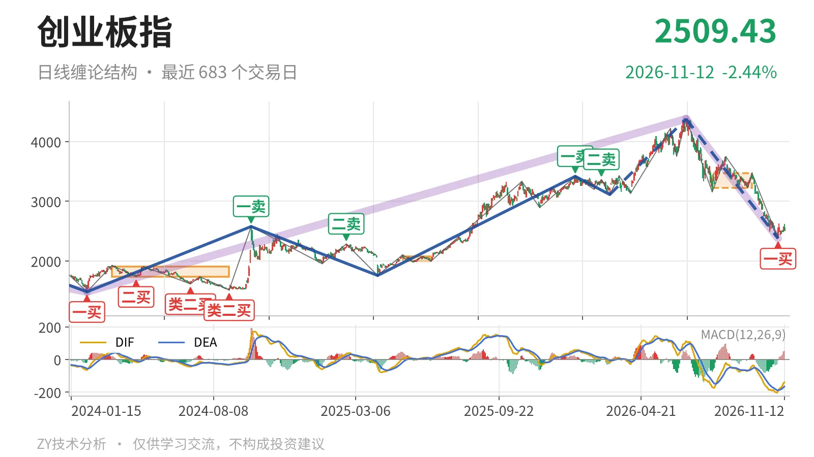
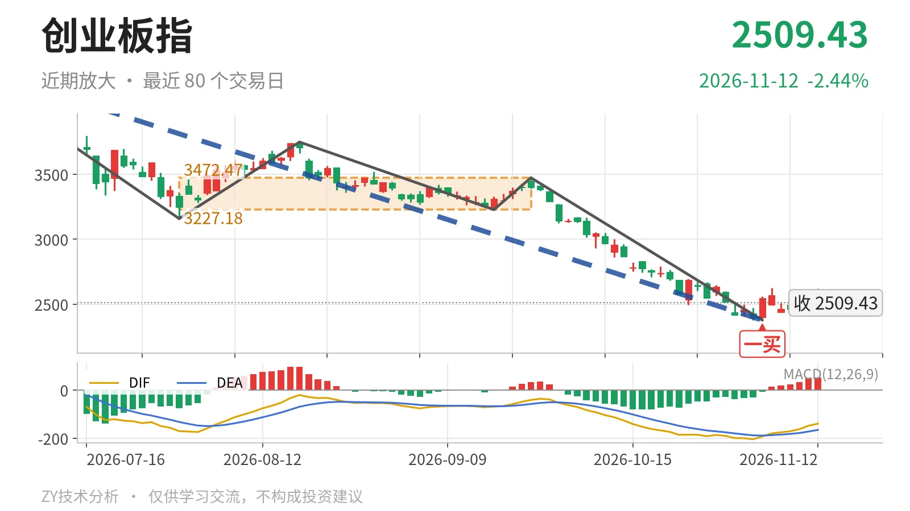

创业板指｜跌破3227点中枢，一买反抽未成笔

最近日线中枢 3227.18—3472.47点，收盘位于中枢之下
一句话：11月4日一买后弱反抽未成笔，仍在最近中枢下方，三卖观察不变。
📉 走势结构：下跌线段仍在延续
6月25日以来的日线下跌线段还在延续，当前没有走出反向日线上涨线段。更大级别上，2024年2月5日至2026年6月25日的上涨走势尚未结束，但6月25日以来的下跌走势同样没有结束。日线线段内部，3月9日至6月25日上涨线段最高到4380.41点，随后6月25日至11月4日下跌线段最低到2376.28点，内含5笔。11月5日至11月12日只有6根K线的未成笔反抽，最高2625.99点、最低2438.72点，收在2509.43点，不足以改变当前下跌线段结构。

🧭 中枢与位置：跌破最近日线中枢，中枢整体上移
最新收盘2509.43点位于7月30日至9月22日日线笔中枢3227.18—3472.47点下方，低于下沿约717点。该中枢尚未完成，中轴3349.83点。此前日线笔中枢从2024年3月18日至2024年8月29日的1735.28—1907.02点，到2025年5月14日至2025年6月23日的1996.96—2076.91点，再到最近3227.18—3472.47点，整体是上移的。但9月22日以来下跌笔以31.6%的幅度直接击穿该中枢下沿，当前价格仍远离中枢，属于向下离开中枢的状态。
🧿 买卖点：一买仅是日线笔级别
11月4日2376.28点是日线笔级别一买，落在9月22日至11月4日下跌笔末端。其后未成笔反抽最高2625.99点，尚未跌破2376点，一买低点仍在。但这个一买所在的环境是6月25日以来日线下跌线段还在延续，因此它只能先看日线笔级别反抽，不能直接当作日线线段级别买点。上方1月13日3416.84点一卖、2月25日3363.18点二卖，一个比一个低，也说明这段下跌压力仍在上方。

⚡ 背驰：价创新低但绿柱面积收缩
9月22日至11月4日下跌笔与6月25日至7月30日下跌笔相比，价格从3158.14点下移到2376.28点，但绿柱面积由1837收缩到1107。价格新低而绿柱面积没有放大，构成日线笔级别下跌力度不跟随，这是11月4日一买的背驰来源。DIF低点从-171.1下移到-204.5，仍在零轴下方且未抬高，说明当前只是下跌内部修复，不是强反转结构。
📌 关键位置观察：3227点与2376点定强弱
当前结构偏弱，弱在反抽未成笔、且收盘仍低于最近中枢下沿约717点。上方关键位看3227点附近，反抽若回不到3227点上方，结构上构成三卖；重新站上3227点，9月22日以来的下跌更可能只是中枢扩展而非继续下移。下方2376点是11月4日一买低点，若被跌破，该日线笔一买失效，6月25日以来下跌段继续向下离开。结构上先按偏弱对待。
⚠️ 本文为基于公开行情数据的缠论技术结构记录，由程序自动计算并生成，仅供学习交流，不构成任何投资建议。市场有风险，投资需谨慎。